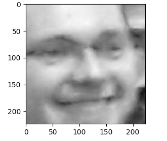
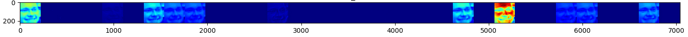
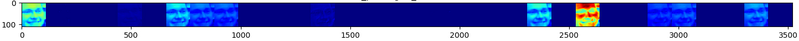
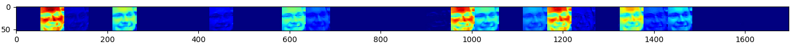
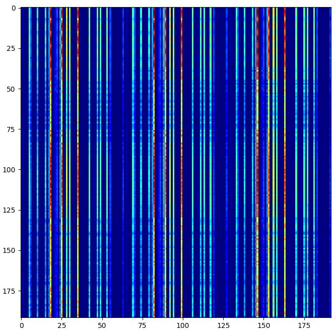
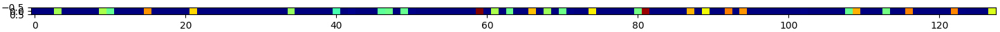
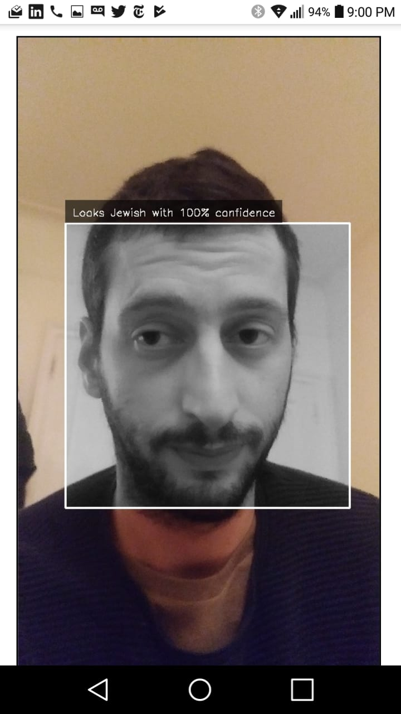

Loading,
Loading, Make sure you have your webcam connected and to allow the site to use it.
(takes about 30 seconds)
See how Jewish you look:
("Photo Booth" version is available on desktop)
Use your camera or choose an image:

jFinder, is an artifitial neural net that predicts whether someone is jewish based on their fatial features.
With 91.08% accuracy(tested on 1500 samples, trained on over 5000 images).
The process
Aggrigating faces to compose a jewish/non-Jewish database.
Samples from the Jewish sources:

circa 1990, Jewish immigrants from the Soviet Union

Jewish refugees, Europe (probably Italy), January 1944

Israeli president Reuven Rivlin with ultra-Othodox IDF soldiers


Samples of Non-Jewish sources


Into a faces data base
Jewish batch sample

Non-Jewish batch sample

Training the model
A Deep Neural Net was designed specifically for this purpose, according to the data and learning result. The model is based roughly on two award winning models, the VGG16, GoogLeNet, and ResNet.
The database is composed of roughly 5000 training images and 1500 testing images. After the last session of training (72 hours) this model can classify people according to whether they are Jewish or not in 91.08% accuracy (tested by 1000 images that the model did not see before).
Below are some visual samples of the data in between the layers. In the process each images is entered as input, each layer manipulates the data in the images and reshapes it, from 224 pixels at the start, to only two pixels, Jewish and non-Jewish, in which their values represent the confidence level of the prediction.
The database is composed of roughly 5000 training images and 1500 testing images. After the last session of training (72 hours) this model can classify people according to whether they are Jewish or not in 91.08% accuracy (tested by 1000 images that the model did not see before).
Below are some visual samples of the data in between the layers. In the process each images is entered as input, each layer manipulates the data in the images and reshapes it, from 224 pixels at the start, to only two pixels, Jewish and non-Jewish, in which their values represent the confidence level of the prediction.
Model Layers - Deep Neural Net
samples from a few of the layers
Input image
224 pixels X 224 pixels
Convolutional layer
Extracting and enhancing values in the image, the images is reshaped according to 32 filters
Max pooling layer
contracting the image and using the highst values of areas
Convolutional layer
reshape layer
A multidimentional pattern that we'll start to narrow down and flatten down.
Flatten
One long line of pixels (values). Final output
Two pixels, each represent a classification (Jewish and Now-Jewish) with values that represent the models confidence.Some obvious Predictions
